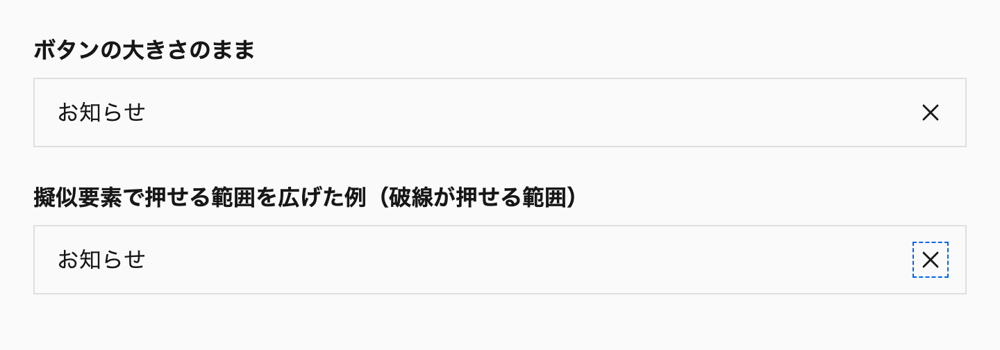
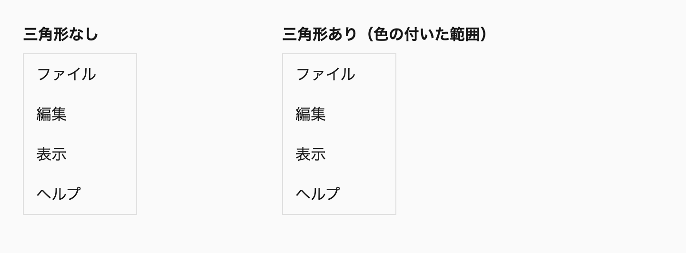
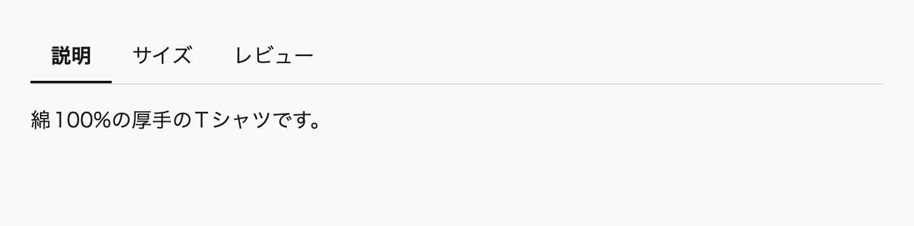
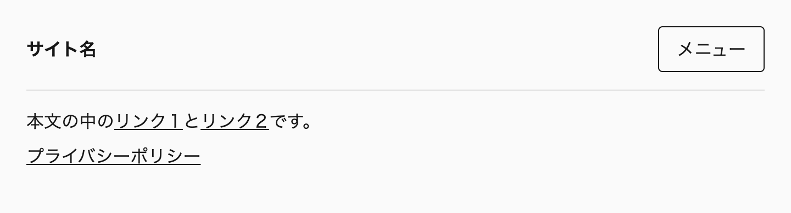
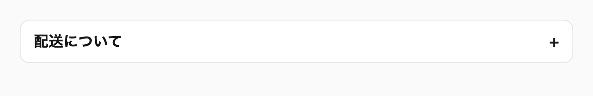

この章では、ユーザーの操作に反応する部分のCSSを扱います。ホバーやフォーカスの状態の表し方、ダイアログやアコーディオンのような開閉するUI、フォーム部品、カルーセルです。インタラクションはできるだけブラウザの機能に任せ、CSSでは見た目を足すことに徹します。
操作に関わるUIは、見た目が同じでも使いやすさが変わります。キーボードで操作できるか、スクリーンリーダーで状態が読み上げられるか、ページ内検索で中身が見つかるかといった違いがあるからです。以前は、こうした振る舞いの多くをJavaScriptで作り直す必要がありました。現在は、<dialog> の command 属性や popover 属性、<details> の name 属性のように、HTMLとCSSだけで実現できることが増えています。
私自身、少し前まではモーダルの開閉や背景のクリックの判定をJavaScriptで書いていました。入力エラーの表示も、:invalid ではページを開いた時点でエラーが出てしまうので、JavaScriptで管理していました。どちらも、いまはブラウザの機能で置き換えられます。
この章を読むと、ホバーで変える見た目をどの状態に限定し、キーボードで操作したときにどう表すかを決められるようになります。開閉するUIでは、<dialog>、popover 属性、<details>、hidden="until-found" のどれを使うかを、背面を操作できなくするか、ページ内検索で中身を見つけられるようにするかといった要件から選べます。フォーム部品やカルーセルについても、JavaScriptで作り直していた振る舞いのうち、ブラウザの機能に置き換えられるものを見分けられます。
この章は次の7つの節で構成しています。17-1から17-4は、どの部品にも関わる操作の基本で、17-5から17-7は、部品ごとの作り方です。
any-hover によるホバーの書き方、:focus-visible との対応、キーボード操作とトランジション、透明度ではなく色で表す変化user-select と touch-action を指定する範囲data-* 属性の順で選ぶ状態のセレクタ、:focus-within と :has(:focus-visible) の使い分け::after を広げる方法と、フォーカスリングの出し方<dialog>、popover 属性、<details>、hidden="until-found" の使い分け、ドロワーの背面に付ける inert 属性accent-color、input 自体に描くチェックボックス、switch 属性、:user-invalid、入力欄の文字サイズ::scroll-button() と ::scroll-marker、隠れているスライドを外す interactivity: inert、自動再生をしない判断トランジションとアニメーション、開閉するUIの出現と退場の動き、View Transitionsによる画面の切り替えは、第18章「モーション」で扱います※1。強制カラーモードでの部品の見え方は「15-5 強制カラーモードとコントラスト」で扱います。この章のコード例では、説明に関係しない @layer の記述を省略しています。デモのCSSには省略せずに書いています。
初めて読むときは、「17-1 ホバーとフォーカスを表す」「17-3 状態を属性で表す」を読みます。17-4のカード全体のリンクは、第21章の「21-6 カード全体を押せるようにする」の前に読んでください。17-2の押せる範囲と、17-5以降の部品ごとの作り方は、その部品を作るときに読んでください。
次のルールを先に押さえ、ほかのルールは、該当する場面で付録A「ルール一覧（巻3）」から引けば足ります。
hover-with-focus-visible：ホバーで変える見た目は、:focus-visible にも同じように指定します。hover-operable-in-any-hover：ホバーのスタイルは、&:any-link:hover や &:enabled:hover のように操作できる状態に限定し、@media (any-hover) の中に書きます。hide-panels-after-init：開閉するパネルは初期のHTMLでは隠さず、開閉の処理の初期化が成功してからJavaScriptで隠します。no-maximum-scale：入力欄での拡大を防ぐために、maximum-scale や user-scalable=no でズームを止めません。ここまでで、操作に応じて状態を切り替え、その状態を伝えられるようになりました。切り替わる瞬間に動きを付けると変化は分かりやすくなりますが、繰り返し触るUIでは待ち時間が増え、動きを減らす設定をしているユーザーには不調の原因にもなるので、動かすかどうかは別に判断します※2。
ホバーのスタイルは、ホバーできる入力があり、しかも操作できる状態の要素にだけ当てます。書き方は、&:any-link:hover や &:enabled:hover を @media (any-hover) の中に置く形です。同じ見た目を :focus-visible にも指定し、キーボードで操作するユーザーにも同じ手がかりを渡します。
キーボードでフォーカスを移したときの変化は、トランジションを掛けずに一度で切り替えます。ホバーの変化は opacity で透かさず、背景色や文字色を別の色に変えて表します※1。
:hover をメディアクエリの条件なしに書くと、スマートフォンのようなタッチ操作の端末で問題が起きます。タップした要素にホバーのスタイルが当たったまま、ほかの場所をタップするまで残り続けます。リンクによっては、1回目のタップでホバーの表示だけが変わり、2回目でようやく移動することもあります。
/* 🙅♂ Not Recommended */
._submit-button {
&:hover {
background-color: var(--_background--hocus);
}
}
._more-link {
&:hover {
@media (width >= 768px) {
color: var(--_color--hocus);
}
}
}画面の幅で判定する2つ目の書き方も、問題を解決しません。幅の広いタブレットはタッチで操作しますし、幅の狭いウィンドウをマウスで操作することもあります。画面の幅は、入力の方法を表していないからです。
@media (hover: hover) や @media (hover: hover) and (pointer: fine) も、よく見かける書き方です。しかし、hover が調べるのは「主な入力」がホバーできるかどうかだけです。iPadにトラックパッド付きのキーボードをつないだ場合、主な入力はタッチのままなので、トラックパッドでカーソルを重ねてもホバーのスタイルが当たりません。
any-hover と :focus-visible を組み合わせるホバーのスタイルは、@media (any-hover) の中に書きます。any-hover は、使える入力のうち「どれかひとつでも」ホバーできるかを調べるメディア特性です。トラックパッドをつないだタブレットでもホバーが有効になり、つなぐ・外すの変化にも追従します。
ホバーのセレクタは、操作できる状態の要素に絞ります。リンクは &:any-link:hover、ボタンやフォームのコントロールは &:enabled:hover と書きます。:any-link は href を持つリンクにだけ当てはまるので、href を外した現在のページのリンクは反応しません。:enabled は無効にしたボタンを除きます。押せないものが押せそうに見えるのを防ぐためです。<summary> と <label> には無効の状態がないので、条件を付けずに &:hover と書きます。
@scope (.scoped.text-link) to (.scoped) {
:scope {
/* 状態の色は文字色に寄せ、ライトでもダークでもコントラストを上げる */
--_color: var(--foreground--accent);
--_color--hocus: color-mix(in oklab, var(--foreground--accent) 70%, var(--foreground--base));
color: var(--_color);
&:focus-visible {
color: var(--_color--hocus);
}
&:any-link:hover {
@media (any-hover) {
color: var(--_color--hocus);
}
}
}
}
@scope (.scoped.save-button) to (.scoped) {
:scope {
/* 文字色で塗るボタンは、状態の色をページの背景色に寄せて作る（後述の「ホバーの変化を透明度で表す方法」） */
--_background: var(--background--inverse);
--_background--hocus: color-mix(in oklab, var(--background--inverse) 80%, var(--background--base));
background-color: var(--_background);
color: var(--foreground--inverse);
&:focus-visible {
background-color: var(--_background--hocus);
}
&:enabled:hover {
@media (any-hover) {
background-color: var(--_background--hocus);
}
}
}
}Baseline広く利用可能2021年6月から（新しく利用可能になったのは2018年12月）
any-hover メディア特性
web-features 3.40.0 のデータ（2026年9月確認）
条件は (any-hover: hover) と値まで書かずに、(any-hover) と書きます。any-hover の値は none と hover の2つだけです。メディア特性を値なしで書くと、値が none のときに偽、それ以外のときに真と評価されるので、(any-hover) は (any-hover: hover) と同じ意味になります。値を書かないほうが短く、「ホバーできる入力があるか」という問いの形がそのまま読み取れます。
ホバーで変える見た目は、:focus-visible にも同じように指定します。キーボードで操作するユーザーも、マウスで操作するユーザーと同じ手がかりを得られます。祖先の overflow でフォーカスリングの一部が切り取られた場合にも、背景色の変化でフォーカスの位置が分かります。:focus-visible のスタイルはメディアクエリの外に書きます。タッチ操作の端末にも、キーボードをつないで使うユーザーはいるからです。
フォーカスリングそのものは、ベーススタイルで二重のリングを定義しています※2。コンポーネントで指定するのは、リングに加える背景色などの変化だけです。リングを outline: none で消すことはしません。
リングを描いても、フォーカスした要素が固定ヘッダーの下に隠れていては見えません。WCAG 2.2の達成基準2.4.11「隠されないフォーカス（最低限）」（レベルAA）は、キーボードでフォーカスを受けた要素が、制作者の置いたコンテンツで完全に隠れないことを求めています。本書では、ベーススタイルで :focus にも scroll-margin-block-start を指定して、この問題を防いでいます※3※4。
なお、タッチスクリーンを持つノートパソコンでは、マウスもあるので (any-hover) が当てはまります。この環境では、指でタップしたときにホバーのスタイルが残ります。入力の方法を操作ごとに見分けたい場合は、JavaScriptのポインターイベントを併用するしかありません。
@media は、&:enabled:hover のようなセレクタの中に書けます。セレクタの層には、@ルールを数えないからです※5。
ホバーの変化にトランジションを掛けるときは、キーボードでフォーカスを移したときの変化には掛けないようにします。Tabキーで次々とフォーカスを移しているのに、背景色が遅れて変わると、入力と表示がずれて反応が遅く感じられるからです。
._submit-button {
&:not(:focus-visible) {
@media (prefers-reduced-motion: no-preference) {
transition-duration: var(--duration--fast);
transition-property: background-color;
transition-timing-function: var(--ease--out-quint);
}
}
}:focus-visible が当てはまっている間は、トランジションの指定がありません。そのため、フォーカスが来た瞬間に一度で色が変わります。フォーカスが離れるときとホバーのときは、:not(:focus-visible) が当てはまるので、なめらかに色が戻ります※6。
ホバーの表現として手軽なのが、opacity: 0.7 のように要素を透かす方法です。しかし、この方法はおすすめしません。背景だけでなく文字まで透けるので、コントラストが下がって読みにくくなります。背景に画像や別の色があると、それが透けて見えるのも問題です。
/* 🙅♂ Not Recommended */
._submit-button {
&:hover {
opacity: 0.7;
}
}もうひとつの問題は、意図が伝わらないことです。コードを読んだ人には、「ホバーしたら暗くしたい」のか「目立たなくしたい」のかが分かりません。デザインで別の色が指定されているなら、その色をそのまま書いたほうが、意図とコードが一致します。
背景色や文字色を変えるときは、状態ごとの値を --_background--hocus のような接尾辞を付けた内部プロパティにまとめます。値には、デザインで決まっている色のトークンを使います。専用の色がない場合は、oklch(from var(--_background) calc(l - 0.1) c h) のように、相対カラー構文で元の色から明るさだけを変えた色を作ります※7。
メニューの項目、リストの行、選択していないタブのように背景が透明な項目には、明るさを変える元の色がありません。こうした項目には、半透明の重ね色のトークン --background--hover と --background--active を、background-color に直接指定します。値はライトのテーマで黒の4%と7%、ダークのテーマで白の6%と10%で、下にある面をわずかに暗く、または明るく見せます。ページ、カード、メニューのどの面に置いても同じ見え方になるので、面ごとにホバーの色を決めずに済みます。
:root {
--background--hover: light-dark(oklch(0% 0 0deg / 4%), oklch(100% 0 0deg / 6%));
--background--active: light-dark(oklch(0% 0 0deg / 7%), oklch(100% 0 0deg / 10%));
}
@scope (.scoped.option-menu) to (.scoped) {
._item {
&:focus-visible {
background-color: var(--background--hover);
}
&:enabled:hover {
@media (any-hover) {
background-color: var(--background--hover);
}
}
&:enabled:active {
background-color: var(--background--active);
}
}
}重ね色は、opacity で要素を透かす方法とは別のものです。半透明なのは背景に指定した色だけで、項目の文字や枠線は透けないので、コントラストは下がりません。トークンの名前から、ホバーと押下のための色だと読み取れます。背景色のあるボタンには重ね色を使わず、相対カラー構文で明るさを変えます。background-color に重ね色を指定すると、ボタンの塗りが半透明の色に置き換わってしまうからです。デモが読み込んでいるトークンの値は、「付録I デモの共通トークン（巻3）」に載せています。「17-2 押せる範囲とタッチ操作」のデモも、この重ね色を使っています。
ただし、主ボタンのように文字色で塗るボタンは、相対カラー構文で明るさを変えられません。塗りに使う --background--inverse の値は light-dark() で、ライトのテーマでは黒寄り、ダークのテーマでは白寄りの色です。黒寄りの塗りは明るくしないと、白寄りの塗りは暗くしないと、変化が見えにくくなります。calc(l - 0.1) のように明るさを一方向へ変える式では、片方のテーマで変化がほとんど見えません。そこで、color-mix() でページの背景色 --background--base に寄せます。ページの背景色は、文字色とコントラストを取るために塗りと反対側の明るさにあるので、1つの式で、ライトでは明るく、ダークでは暗くなります。
@scope (.scoped.primary-button) to (.scoped) {
:scope {
--_background: var(--background--inverse);
--_background--hocus: color-mix(in oklab, var(--background--inverse) 80%, var(--background--base));
background-color: var(--_background);
color: var(--foreground--inverse);
&:focus-visible {
--_background: var(--_background--hocus);
}
&:enabled:hover {
@media (any-hover) {
--_background: var(--_background--hocus);
}
}
}
}次のデモでは、ボタンとリンクにマウスを重ねたときと、Tabキーでフォーカスを移したときに、同じように色が変わります。ボタンは文字色で塗り、状態の色を上の例と同じくページの背景色に寄せて作っています。無効にしたボタンと、href のない現在のページのリンクは反応しません。
デモ17-1-1 ホバーとフォーカスで同じように色が変わり、操作できないものは反応しない（補足サイト）
比較のために、ホバーを opacity で表したものが次のデモです。文字まで薄くなり、無効にしたボタンも反応します。Tabキーでフォーカスを移しても、フォーカスリング以外は何も変わりません。
デモ17-1-2 ホバーを透明度で表すと、文字まで薄くなり、フォーカスでは何も変わらない（補足サイト）
ホバーで位置や大きさが変わる要素を、そのまま :hover の対象にすると、ちらつくことがあります。カーソルが縁にあるとき要素が動くと、ホバーが外れて要素がもとの位置に戻り、戻るとまたホバーが当たる、という繰り返しになるからです。
/* 🙅♂ Not Recommended */
._submit-button {
&:hover {
translate: 0 -4px;
}
}ホバーを受ける要素は動かさず、動かすのは子要素（または擬似要素）にします。ホバーを受ける側は、動かない当たり判定として働きます。
次の例では、ボタンの状態を子へ伝えるため、フラグのカスタムプロパティ --_hocus を使います。フラグを使うのは、このように子要素や擬似要素を変えるときです。要素自身の色や背景だけを変えるなら、前の見出しまでの例のように、状態のセレクタに直接書けば足ります。
@scope (.scoped.lift-button) to (.scoped) {
:scope {
--_hocus: --false;
--_focus-visible: --false;
display: inline grid;
&:focus-visible {
--_hocus: --true;
--_focus-visible: --true;
}
&:enabled:hover {
@media (any-hover) {
--_hocus: --true;
}
}
}
._face {
@container style(--_hocus: --true) {
translate: 0 -4px;
}
@container style(--_focus-visible: --false) {
@media (prefers-reduced-motion: no-preference) {
transition-duration: var(--duration--fast);
transition-property: translate;
transition-timing-function: var(--ease--out-quint);
}
}
}
}ボタンのホバーとフォーカスは、フラグのカスタムプロパティ --_hocus で子の ._face に伝えます。ボタンの状態のセレクタで --_hocus: --true を立て、._face は @container style(--_hocus: --true) で持ち上がります。名前なしの style() は親を問い合わせ、カスタムプロパティは継承するので、ボタンで立てたフラグを ._face から読めます。ボタンにデフォルト値の --_hocus: --false を明示しているのは、外側の要素で立てたフラグを継承しないためです。
キーボードでフォーカスしたときは一度で持ち上げるので、トランジションも --_focus-visible のフラグで切り替えます。ボタンの &:not(:focus-visible) にトランジションを書いても、transition は継承しないので、動く ._face には掛かりません※8。
必須ホバーのスタイルは、リンクなら &:any-link:hover、ボタンやフォームのコントロールなら &:enabled:hover のように操作できる状態に限定し、@media (any-hover) の中に書く。
hover-operable-in-any-hover
必須ホバーで変える見た目は、:focus-visible にも同じように指定する。
hover-with-focus-visible
禁止キーボード操作によるフォーカスの移動にトランジションやアニメーションを掛けない。
no-motion-on-focus-visible
非推奨ホバーやフォーカスの変化を opacity で表さない。
no-opacity-for-hover
推奨ホバーで位置や大きさが変わる要素は、ホバーを受ける要素を動かさず、子要素（または擬似要素）を動かす。
hover-target-stays-still
opacity で表さない理由）押せる範囲は、見た目の大きさではなく、<a> や <button> のような操作する要素自身の大きさで決まります。そこで、操作する要素に最小の大きさを確保し、余白も外側の要素ではなく、その要素自身に付けます。ホバーで背景が付く項目を並べるときは、項目の間に隙間を作らず、間隔を項目の内側の padding で作ります。
文字の選択を止める user-select: none と、ブラウザのタッチ操作を止める touch-action も、押す操作を受ける部品の側で決めます。どちらも、それを必要とする部品にだけ指定し、ページ全体には指定しません。
指で操作する環境では、操作する領域が小さいと、押し間違いの原因になります。WCAG 2.2の達成基準2.5.8「ターゲットのサイズ（最低限）」（レベルAA）は、ポインターで操作する対象を24×24 CSSピクセル以上にすることを求めています。周囲に十分な間隔がある場合や、文章中のリンクのような場合は例外です。より厳しい達成基準2.5.5「ターゲットのサイズ（強化）」（レベルAAA）は、44×44 CSSピクセルを求めています。
本書では、ボタンやアイコンのような操作する要素に、24px相当の最小の大きさを確保します。タッチ操作ができる環境では、44px相当に広げます。切り替えるのは大きさの値だけで、min-block-size と min-inline-size の指定は1か所にします。大きさは、ボタンの最小の高さと同じく、文字と一緒に大きくなるように rem で書きます※1。ただし、rem だけで書くと、ブラウザの文字サイズを16pxより小さくしたユーザーの環境では、WCAGが求めるCSSピクセルの下限を下回ります。たとえば文字サイズが12pxなら、calc(24 / 16 * 1rem) は18pxです。そこで max(24px, 24 / 16 * 1rem) と書き、文字と一緒に大きくなりながら、24pxを下回らないようにします。
@scope (.scoped.icon-button) to (.scoped) {
:scope {
--_hit-size: max(24px, 24 / 16 * 1rem);
display: inline grid;
place-content: center;
min-inline-size: var(--_hit-size);
min-block-size: var(--_hit-size);
@media (any-pointer: coarse) {
--_hit-size: max(44px, 44 / 16 * 1rem);
}
}
}条件には、pointer ではなく any-pointer を使います。使える入力にタッチ操作がひとつでもあれば、広いほうの大きさにするためです※2。
24pxに満たない要素を並べるときは、要素の間隔で例外の条件を満たします。達成基準2.5.8の「十分な間隔」とは、24pxに満たない要素それぞれの中心に直径24pxの円を描いたとき、その円がほかの要素にも、ほかの要素の円にも重ならないことです。たとえば16px四方のアイコンを横に並べるなら、中心どうしを24px以上離す必要があるので、gap は8px以上にします。
押せる範囲を決めるのは、<a> や <button> のような操作する要素自身の大きさです。ナビゲーションの <li> やリストのような外側の要素に padding を付けても、見た目の上では項目が大きくなるだけで、押せるのは文字の部分に限られます。項目の端を押しても反応しないので、ユーザーは押し損じたと感じます。
/* 🙅♂ Not Recommended */
._item {
padding: 12px 16px;
}padding は、操作する要素自身に付けます。<a> は初期値でインラインなので、display: block flow か display: inline flow-root にして、上下の padding も押せる範囲と行の高さに含めます※3。
@scope (.scoped.global-nav) to (.scoped) {
._link {
display: block flow;
padding: 12px 16px;
}
}
@scope (.scoped.option-list) to (.scoped) {
._option {
display: block flex;
gap: 8px;
align-items: center;
padding-block: 8px;
}
}チェックボックスとその文字も、同じ考え方で扱います。2つ目の例の ._option は、チェックボックスと文字をまとめて包んだ <label> です。チェックボックスと文字の間の gap も、上下の padding も <label> の内側にあるので、どこを押してもチェックが切り替わります。チェックボックスと <label> を兄弟に並べて間を空けると、その隙間は押しても何も起きない領域になります。
次のデモでは、押せる範囲に色を付け、外側の要素を破線で囲んでいます。上の例では、破線の内側でも色の付いていない部分を押すと何も起きません。下の例では、破線と色の範囲が一致し、どこを押しても反応します。
デモ17-2-1 余白を外側の要素に付けると押せる範囲は文字だけになり、操作する要素自身に付けると余白まで押せる（補足サイト）
メニュー、リスト、タブのように、ホバーした項目に背景が付く部品では、項目の間を gap や margin で空けません。間隔は、各項目の内側の padding で作ります。カーソルが項目の間の隙間を通るあいだは、どの項目にもホバーが当たらず、背景がいったん消えてから次の項目に付き直すからです。カーソルを縦に動かすと背景が点滅して見え、隙間で手を止めれば、背景の付いた項目が1つもなくなります。
/* 🙅♂ Not Recommended */
._list {
display: block grid;
gap: 8px;
}
._link {
padding-block: 6px;
}隙間は、押せる範囲の外でもあります。隙間を押しても何も起きないので、ユーザーには押し損じたように見えます。項目の上下の padding を隙間のぶん増やせば、項目の並ぶ間隔は変えずに、隙間をなくせます。
@scope (.scoped.account-menu) to (.scoped) {
._list {
display: block grid;
}
._link {
display: block flow;
padding-block: 10px;
padding-inline: 12px;
border-radius: var(--rounded--md);
&:focus-visible {
background-color: var(--background--hover);
}
&:any-link:hover {
@media (any-hover) {
background-color: var(--background--hover);
}
}
}
}背景の色の --background--hover は、半透明の重ね色のトークンです※4。背景の帯どうしを離して見せたいデザインでも、項目は隙間なく並べたままにします。背景を項目の擬似要素に描き、inset で内側に寄せれば、帯の間に隙間が見えても、ホバーを受ける範囲と押せる範囲は項目の全体に残ります。
隙間を残したまま、カーソルから最も近い項目へ背景を付けたり、隙間を押した操作を背景の付いた項目へ渡したりする作り方もあります。どちらもカーソルの位置から項目を選ぶ処理が要り、CSSだけでは書けないので、本書では隙間をなくすほうを選びます。ホバーした項目へ1枚の背景が移っていく表現でも、隙間では背景が薄れてから戻ります※5。
次のデモの2つのメニューは、項目の並ぶ間隔が同じです。gap で項目の間を空けたメニューでカーソルを上から下へゆっくり動かすと、項目の間の8pxを通るたびに背景が消え、次の項目で付き直します。項目の padding で間隔を作ったメニューでは、背景が隣の項目へすぐに移り、どの位置で止めてもいずれかの項目に背景が付いています。
デモ17-2-2 項目の間に隙間があると背景が点滅し、項目の padding で間隔を作ると背景が途切れずに移る（補足サイト）
ダイアログの閉じるボタンのように、デザインの都合で見た目を小さく保ちたい要素もあります。この場合は、擬似要素を要素の外にはみ出させて、押せる範囲だけを広げます。擬似要素は要素の一部なので、擬似要素を押せば要素を押したことになります。WCAGの「ターゲット」もポインターの操作を受け付ける領域を指すので、擬似要素で広げた範囲を大きさとして数えられます。
@scope (.scoped.close-button) to (.scoped) {
:scope {
--_hit-size: max(24px, 24 / 16 * 1rem);
position: relative;
display: inline grid;
place-content: center;
@media (any-pointer: coarse) {
--_hit-size: max(44px, 44 / 16 * 1rem);
}
&::before {
content: "";
position: absolute;
inset: min(0px, (100% - var(--_hit-size)) / 2);
}
}
}inset のパーセンテージは、インライン方向の値なら基準のボックスの幅、ブロック方向の値なら高さを基準にします。(100% - var(--_hit-size)) / 2 は、要素が --_hit-size より小さいぶんの半分を負の値で表すので、擬似要素は要素を中心に --_hit-size 四方へ広がります。min() で0pxを上限にしているのは、要素がもともと --_hit-size より大きいときに、擬似要素が要素より小さくならないようにするためです。
広げた範囲が隣の要素に重なると、重なった部分を押したときにどちらが反応するかは、重なりの順序で決まります。ユーザーには、押した要素と違うものが反応したように見えます。擬似要素で広げるのは、周りに広げるだけの余白がある要素に限り、並べるときは広げたあとの大きさで間隔を確かめます。
次のデモでは、2つの閉じるボタンの見た目は同じです。下のボタンは、破線で囲んだ範囲のどこにマウスを重ねても色が変わり、押せる範囲が擬似要素の分だけ広がっていることが分かります。

幅 720px
ホバーで横にサブメニューが開くメニューでは、カーソルをサブメニューへ斜めに動かす途中で、隣の項目の上を通ることがあります。すると隣の項目にホバーが移り、開いていたサブメニューが閉じて、隣の項目のサブメニューに切り替わります。サブメニューの中の項目を選ぶには、いったん真横に動かしてから縦に動かすしかありません。
この問題は、項目とサブメニューの間に、カーソルが通っても隣の項目に移らない三角形の領域を置くと防げます。カーソルの位置を頂点の1つとし、サブメニューの項目側の辺の両端を残りの2つの頂点とする三角形です。この領域は「安全な三角形」（safe triangle）と呼ばれます。三角形はホバーを受けている項目の擬似要素として描き、clip-path: polygon() で切り抜きます。CSS Maskingの仕様では、clip-path で切り抜いた外側はポインターの操作を受けないので、三角形の内側だけが項目の一部として働きます。
@scope (.scoped.action-menu) to (.scoped) {
._trigger {
&::before {
content: "";
position: fixed;
inset: var(--_safe-top) var(--_safe-right) var(--_safe-bottom) var(--_safe-left);
z-index: var(--z--forwards);
display: none;
clip-path: polygon(0 var(--_safe-y), 100% 0, 100% 100%);
}
&:enabled:hover::before {
@media (any-hover) {
display: block flow;
}
}
}
}この例は、サブメニューが右に開く場合です。擬似要素の矩形は、カーソルの位置からサブメニューの左の辺までの範囲で、高さはサブメニューにそろえます。--_safe-y は、矩形の上端からカーソルまでの距離です。これらの値は、JavaScriptで pointermove のたびに、カーソルの位置とサブメニューの getBoundingClientRect() から求めて設定します。画面上の座標から決まる値なので、inset は論理プロパティにせず、物理方向の4つの値で受けます。
三角形の擬似要素は、@media (any-hover) の中でだけ表示します。タッチ操作ではホバーがなく、斜めの移動も起きないからです。キーボードの操作にも関わりません。サブメニューは、ホバーだけでなくボタンを押したときやキーボードでも開けるようにしておきます。
次のデモは、マウスで操作して確かめます。「ファイル」の左寄りにカーソルを置き、開いたサブメニューの「書き出す」へ斜めに動かしてください。「三角形なし」のメニューでは、途中で「編集」や「表示」のサブメニューに切り替わります。「三角形あり」のメニューでは、色の付いた三角形の中を通るあいだ「ファイル」のサブメニューが開いたままです。

幅 720px
操作部品の中には、素早く2回押すと、中の文字が選択されてしまうものがあります。Chrome 152で確かめたところ、<label>、<summary>、role="tab" を付けた <div> は、ダブルクリックで文字の一部が選択されました。<button> の文字は選択されませんでした（2026年10月確認）。<label> とラジオボタンで作った表示の切り替えや、数量を1ずつ増やす部品のように、続けて押すことの多い部品では、押すたびに文字が反転して見えます。タッチ操作の端末では、長押しで文字の選択が始まることもあります。
こうした部品にだけ、user-select: none を指定します。Safariは接頭辞なしの user-select に対応していないので（2026年10月確認）、-webkit-user-select を併記します。接頭辞を書くときは、理由のコメントとStylelintの無効化のコメントを添えます※6。
@scope (.scoped.view-switcher) to (.scoped) {
label {
/* Safari は接頭辞なしの user-select に対応していない（2026年10月） */
/* stylelint-disable-next-line property-no-vendor-prefix */
-webkit-user-select: none;
user-select: none;
}
}Baseline一部のブラウザのみ
user-select
web-features 3.40.0 のデータ（2026年9月確認）
user-select: none は、本文の文字や body には指定しません。user-select は継承しないプロパティですが、初期値の auto は、親の値が none なら none として扱われます（MDN）。そのため、body に指定すると、ページのすべての文字が選択できなくなります。文章をコピーして引用や検索に使うユーザーも、選択した文字を読み上げや翻訳の機能に渡すユーザーも困ります。コピーを防ぐ目的でも、開発者ツールやソースの表示で文字は取り出せるので、効果はありません。
touch-action を指定する範囲touch-action は、タッチ操作でブラウザがスクロールや拡大をするかどうかを決めるプロパティです。これを html や body に none で指定すると、ページ全体でスクロールとピンチでの拡大が止まります。touch-action も継承しませんが、ブラウザは、触れた要素からスクロールする祖先までの値を重ね合わせて、許す操作を決めるからです（MDN）。拡大して読む必要のあるユーザーが拡大できなくなる点は、<meta name="viewport"> でズームを止めた場合と同じです※7。
/* 🙅♂ Not Recommended */
body {
touch-action: none;
user-select: none;
}touch-action は、ドラッグやスワイプを自分で処理する部品にだけ指定します。たとえば、つまみを横にドラッグして2枚の画像を見比べる部品なら、つまみに pan-y pinch-zoom を指定します。横の動きは部品が処理し、縦のスクロールとピンチでの拡大はブラウザに残せます。none にするのは、手書きの入力欄のように、すべての指の動きを部品で受け取る場合だけです。
@scope (.scoped.compare-slider) to (.scoped) {
._handle {
touch-action: pan-y pinch-zoom;
}
}Baseline広く利用可能2022年3月から（新しく利用可能になったのは2019年9月）
touch-action
web-features 3.40.0 のデータ（2026年9月確認）
ボタンには、touch-action を書き直しません。kiso.cssが、<button> や、role="button"、role="tab" を付けた要素などに touch-action: manipulation を指定しています。iOSでダブルタップしたときの拡大を防ぐためです※8。manipulation は、スクロールとピンチでの拡大を許し、ダブルタップでの拡大だけを止める値です。
推奨操作する要素には 24px 相当の最小の大きさを確保し、@media (any-pointer: coarse) では 44px 相当にする。大きさは内部のカスタムプロパティの値だけを切り替える。
hit-area-min-size
推奨押せる範囲を広げる padding は、<li> のような外側の要素ではなく、<a> や <button> のような操作する要素自身に付ける。チェックボックスやラジオボタンは <label> で文字と一緒に包む。
padding-on-interactive-element
推奨ホバーで背景が付く項目を並べるメニュー、リスト、タブでは、項目の間を gap や margin で空けず、間隔を各項目の内側の padding で作る。
no-gaps-between-hover-items
推奨見た目を変えずに押せる範囲を広げるときは、擬似要素を inset: min(0px, (100% - var(--_hit-size)) / 2) で要素の外にはみ出させ、広げた範囲を隣の操作する要素に重ねない。
pseudo-hit-area-no-overlap
推奨user-select: none は、<label> で作った切り替えや role="tab" のタブのように、連打や長押しで文字が選択されて困る操作部品にだけ指定し、本文や body には指定しない。
user-select-none-for-controls
禁止html、body、全称セレクタのようにページ全体に及ぶセレクタに touch-action: none を指定しない。
no-global-touch-action-none
選択中のタブや開いているメニューのような状態は、JavaScriptで付け外しするクラスではなく、状態そのものを表す擬似クラスや属性をセレクタにします。検討する順番は、擬似クラス、HTML要素の属性、ARIA属性、data-* 属性です。見た目と、ブラウザや支援技術に伝わる状態が同じ属性から決まるので、両者がずれません。
選択中のタブ、開いているメニュー、現在のページのリンクのような状態は、BEMのModifierのように、JavaScriptでクラスを付け外しして表すことがよくあります。しかし、こうした状態の多くは、アクセシビリティのためにARIA属性でも表す必要があります。クラスと属性の両方を切り替えると、同じ状態を2か所で管理することになります。
/* 🙅♂ Not Recommended */
._tab.is-active {
border-color: currentColor;
}本書では、状態を表すのに原則としてクラスを使いません。次の優先順位で、状態を表すセレクタを選びます。
:disabled、:any-link、:checked など）target 属性、<details> の open 属性など）aria-expanded、aria-readonly、aria-selected など）data-* 属性最初に検討するのは、擬似クラスです。:checked、:disabled、:popover-open、:modal、:user-invalid などは、ブラウザが状態を判定して付け外しするので、JavaScriptで管理する必要がありません。required 属性と :required のように、属性と擬似クラスのどちらでも選べる状態は、擬似クラスで選びます。
擬似クラスがない状態は、HTML要素の属性をセレクタにします。新しいタブで開くリンクを示す [target="_blank"] や、開いた <details> を示す [open] がこれにあたります。これらの属性は、ブラウザの動作を決めるためにHTMLへ書くものです。見た目も同じ属性から決めれば、動作と見た目が食い違いません。
HTMLの属性でも表せない状態は、aria-selected、aria-expanded、aria-current、aria-pressed のようなARIA属性をセレクタにします。タブの選択やメニューの展開は、HTMLの要素だけでは表せず、ARIA属性で支援技術に伝える状態です。
@scope (.scoped.tab-list) to (.scoped) {
._tab {
border-block-end: 2px solid transparent;
&[aria-selected="true"] {
border-color: currentColor;
}
&:enabled:not([aria-selected="true"]):hover {
@media (any-hover) {
border-color: var(--border--base);
}
}
}
}ARIA属性をセレクタにすれば、支援技術に伝わる状態と見た目の状態が同じ属性から決まるので、両者がずれません。JavaScriptが属性の更新を忘れたら見た目も変わらないので、不具合にもすぐ気づけます。私は2020年ごろから、状態の管理は原則としてARIA属性とdata属性で行うと決めています。
次のデモでは、スクリプトはタブの aria-selected 属性を書き換えるだけで、クラスは付け外ししていません。タブを押すか、タブにフォーカスして左右の矢印キーを押すと、aria-selected="true" になったタブへ下線が移ります。選択していないタブにマウスを重ねると、薄い色の下線が出ます。

幅 720px
子孫の状態によって祖先の見た目を変えるときは、label:has(:checked) や :has(:focus-visible) のように :has() を使います。状態のクラスを祖先に付けるJavaScriptは要りません※1。
フォーカスを受けた子に応じて親の見た目を変えるときは、:focus-within と :has(:focus-visible) を使い分けます。:focus-within は、子孫のどれかが :focus に当てはまれば当てはまるので、ボタンをマウスでクリックしたときにも親が強調されます（MDN）。子のどれかにフォーカスした時点でグループ全体を強調してよいなら、これで足ります。ブラウザがフォーカスの表示を必要と判断する場合だけ親を強調したいなら、&:has(:focus-visible) と書きます。
ただし、:focus-visible は入力の手段を判定する擬似クラスではありません。仕様が示す目安では、ボタンをマウスでクリックしたときには当てはまりませんが、テキストの入力欄はクリックやタッチでフォーカスしたときにも当てはまります（Selectors Level 4）。入力欄の多いグループでは、:has(:focus-visible) と :focus-within の差はほとんどありません。ユーザーがフォーカスの常時表示を選んでいる場合は、クリックでフォーカスした要素も :focus-visible に当てはまるとされています。
HTMLの属性とARIA属性のどちらでも表せない状態だけを、data-* 属性で表します。たとえば、ページをスクロールしたらヘッダーの高さを縮める場合、縮んでいるかどうかは見た目のためだけにある状態で、支援技術に伝える意味はありません。こうした状態は data-compact-mode のような属性で定義し、JavaScriptで付け外しします。支援技術に伝える意味のない値を、ARIA属性にするわけにはいきません。
@scope (.scoped.site-header) to (.scoped) {
:scope {
min-block-size: 80px;
&[data-compact-mode] {
min-block-size: 56px;
}
}
}画面に入ったことを示す data-revealed や、ポップオーバーを開いた向きを示す data-placement="top" も、同じく見た目のためだけにある状態です。一方、コンポーネントのバリエーションを表す data-variant は、状態ではありません。HTMLを書いた時点で決まり、操作によって変わらない値です。BEMのModifierは状態とバリエーションの両方を表していましたが、本書では、状態はこの節の優先順位で、バリエーションは data-variant で表します※2。
推奨状態のスタイルは、.is-active のような状態クラスを使わず、擬似クラス（:disabled など）、HTML 要素の属性（target など）、ARIA 属性（aria-expanded など）、data-* 属性の優先順位でセレクタを選ぶ。
state-by-pseudo-class-or-aria
推奨HTML の属性にも ARIA 属性にもない状態（スクロールで縮んだヘッダーや演出の進み具合など）だけを、data-compact-mode のような data-* 属性で表す。
data-attribute-for-other-states
推奨ブラウザがフォーカスの表示を必要と判断する場合に限って親の見た目を変えるときは、:focus-within ではなく &:has(:focus-visible) を使う。
focus-visible-over-focus-within
カードのどこを押しても記事へ移動させたいときは、カードを <a> で包まず、見出しのリンクの ::after をカードいっぱいに広げます。リンクのテキストは見出しだけのまま、押せる範囲だけがカード全体に広がります。
<a> で包む方法の問題記事の一覧のカードでは、見出しだけでなくカードのどこを押しても記事へ移動させたいことがよくあります。いちばん簡単なのは、カード全体を <a> で包む方法です。しかし、この方法ではカードの中身すべてがリンクのテキストになり、スクリーンリーダーは日付やカテゴリーまで続けて読み上げます。カードの中にカテゴリーへのリンクを置きたくても、リンクの中にリンクは入れられません。
そこで、リンクは見出しの <a> だけにし、その ::after をカードいっぱいに広げます。見た目の上ではカードのどこを押してもリンクが反応しますが、リンクのテキストは見出しだけです。
@scope (.scoped.article-card) to (.scoped) {
:scope {
position: relative;
isolation: isolate;
&:has(._heading-link:focus-visible) {
outline: 3px solid CanvasText;
outline-offset: 3px;
}
}
._heading-link {
&::after {
content: "";
position: absolute;
inset: 0;
}
/* フォーカスリングはカードの外周に出すので、ベーススタイルの box-shadow を初期値に戻し、outline は色だけを透明にする */
&:focus-visible {
box-shadow: initial;
outline-color: transparent;
}
}
._category-link {
position: relative;
z-index: var(--z--forwards);
}
}カードに position: relative を指定し、::after の配置の基準にします。フォーカスリングは、リンクの周りではなく :has(._heading-link:focus-visible) でカードの外周に出します。見出しのリンクにフォーカスしたとき、押せる範囲（カード全体）とリングの範囲が一致するからです。カードの中にほかのリンクを置くときは、position: relative と z-index: var(--z--forwards) で ::after より手前に重ねます。
リンク自身のリングのうち、ベーススタイルで内側に描いた box-shadow は、initial で初期値の none に戻します。outline は outline: none で消さずに、色だけを透明にします。強制カラーモードでは outline の色がシステムカラーに置き換わるので、リングの形が残ります。私の案件のコードでは outline: none で消していましたが、本書のルール（「8-3 グローバルに書いてはいけないもの（巻2）」の no-outline-none）に合わせて、この書き方にしました。
この方法にも弱点があります。::after がカードの上に重なるので、カードの中の文章をドラッグして選択できません。以前の私は、この問題を避けるためにJavaScriptでカードのクリックを拾っていました。現在は、実装の手軽さとJavaScriptのない環境でも動くことを優先して、::after を広げる方法を使っています。
推奨カード全体をリンクにするときは、<a> でカードを包まず、見出しのリンクの ::after をカードいっぱいに広げ、フォーカスリングはカードの :has(:focus-visible) に出す。
stretched-link-for-card
開閉するUIは、HTMLの機能で作ります。モーダルは <dialog> を command 属性で開き、closedby="any" で背景のクリックでも閉じられるようにします。メニューのような小さな表示には popover 属性を、その場で開閉する項目には <details> を使います。
見出しの構造を保ちたいアコーディオンやタブでは、閉じたパネルを hidden="until-found" で隠します。ヘッダーのボタンで開閉するドロワーはモーダルにできないので、開いている間は背面の要素に inert 属性を付けます。どれも display: none とクラスの付け外しで作るより、少ないコードで、キーボードやページ内検索にも対応できます。
モーダルやアコーディオンは、div に .is-open のようなクラスを付け外しし、閉じているときは display: none で隠す形で作られてきました。この方法では、ブラウザが本来持っている振る舞いを、すべて自分で作り直すことになります。
/* 🙅♂ Not Recommended */
.modal {
display: none;
}
.modal.is-open {
display: block;
}モーダルなら、開いたときのフォーカスの移動、Escキーで閉じる操作、背面を操作できなくする処理、ほかの要素より手前に出すための z-index の調整が必要です。アコーディオンなら、閉じたパネルの中身がページ内検索で見つからなくなります。どれもJavaScriptで補えますが、補うほどコードが増え、抜け漏れも出ます。
現在は、用途に合わせた要素と属性がそろっています。
| 用途 | 使う要素・属性 |
|---|---|
| 背面の操作を止めるモーダル | <dialog> と command="show-modal" |
| メニューや通知のような小さな表示 | popover 属性 |
| その場で開閉する項目（FAQなど） | <details> と <summary> |
| 見出しの下で開閉するパネル、タブ | hidden="until-found" |
| ヘッダーのボタンを残したまま開くドロワー | 背面の要素に付ける inert 属性 |
command 属性と closedby 属性によるダイアログの開閉モーダルのダイアログは、<dialog> で作ります。開くボタンに commandfor 属性で対象のIDを、command="show-modal" で操作を指定すれば、showModal() を呼ぶJavaScriptは要りません。閉じるボタンには command="close" を指定します。
<button type="button" commandfor="contact-dialog" command="show-modal">お問い合わせ</button>
<dialog id="contact-dialog" class="scoped site-dialog" closedby="any" aria-labelledby="contact-dialog-heading">
<h1 id="contact-dialog-heading">お問い合わせ</h1>
<p>…</p>
<button type="button" commandfor="contact-dialog" command="close">閉じる</button>
</dialog>command 属性は <button> でしか使えません。そのため、div や span にクリックの処理を付けたボタンのような、マークアップの誤りも防げます。closedby="any" を指定すると、Escキーに加えて、背景（::backdrop）のクリックでも閉じます。これまでクリックの位置を調べていた処理は不要です。
組み込みのコマンドは6つあり、それぞれ対象の要素のメソッドに対応します。commandfor 属性には、同じ文書（Shadow DOMの中なら同じシャドウルート）にある要素のIDを書きます。ダイアログを非モーダルで開くコマンドはないので、show() で開く場合はJavaScriptを使います。
command の値 |
対象 | 対応するメソッド |
|---|---|---|
show-modal |
<dialog> |
showModal() |
close |
<dialog> |
close() |
request-close |
<dialog> |
requestClose() |
show-popover |
popover 属性の要素 |
showPopover() |
hide-popover |
popover 属性の要素 |
hidePopover() |
toggle-popover |
popover 属性の要素 |
togglePopover() |
close と request-close は、閉じる前に cancel イベントが発生するかどうかが違います。close はすぐに閉じます。request-close はEscキーで閉じるときと同じく先に cancel イベントを発生させるので、preventDefault() で閉じるのを止められます。入力中のフォームを含むダイアログでは、閉じるボタンに request-close を指定すると、破棄してよいかの確認を cancel イベントの処理1か所にまとめられます。どちらのコマンドでも、ボタンの value 属性の値はダイアログの returnValue に入ります。
showModal() で開いたダイアログは、背面の要素を操作できない状態にし、閉じたときには開く前の要素へフォーカスを戻します。独自のフォーカストラップは作りません。ブラウザのアドレスバーやツールバーへの移動まで妨げてしまうからです。ダイアログの見出しは <h1> にして、aria-labelledby でダイアログの名前にします。背面の要素は操作できないだけでなくinertになり、アクセシビリティツリーからも外れるので、ほかの見出しはツリーに現れません。そのため、ダイアログの中の見出しレベルは、ページ本体と続けて数えず <h1> から始めます。背面がinertにならないshow()の非モーダルなダイアログには、この理由は当てはまりません。
Baseline新しく利用可能2025年12月から
command 属性と commandfor 属性
web-features 3.40.0 のデータ（2026年9月確認）
Baseline一部のブラウザのみ
closedby 属性
web-features 3.40.0 のデータ（2026年9月確認）
2026年10月の時点で、command 属性と commandfor 属性はChrome 135、Firefox 144、Safari 26.2から対応していますが、closedby 属性はSafariが未対応です。command 属性に対応していないブラウザでは、ボタンを押してもダイアログが開きません。私は、Web標準で使えるようになる機能はポリフィルを入れてでも使う方針なので、invokers-polyfill と、私が作った dialog-closedby-polyfill を読み込んでいます。closedby 属性に対応していなくても、Escキーと閉じるボタンでは閉じられます。
command 属性には、-- で始まる独自の値（カスタムコマンド）も書けます。カスタムコマンドのボタンを押すと、ブラウザは何も操作せず、対象の要素に command イベントを発生させます。イベントの command プロパティにはコマンドの値が、source プロパティには押されたボタンが入ります。処理は対象の要素の側に1つ書くだけで済み、ボタンごとにクリックの処理を付ける必要はありません。
<button type="button" commandfor="photo-viewer" command="--zoom-in">拡大</button>
<button type="button" commandfor="photo-viewer" command="--zoom-out">縮小</button>
<img id="photo-viewer" src="photo.jpg" alt="…">const viewer = document.getElementById('photo-viewer');
viewer.addEventListener('command', (event) => {
if (event.command === '--zoom-in') zoomBy(viewer, 1.25);
if (event.command === '--zoom-out') zoomBy(viewer, 0.8);
});command イベントは、組み込みのコマンドでも、操作の前に発生します。イベントは取り消し可能で、preventDefault() を呼ぶとダイアログやポップオーバーの開閉も行われません。
ダイアログと背景を @starting-style でフェードさせる方法は、「18-5 出現と退場」で説明します。
ヘッダーと一体になったドロワーメニューでも、開いている間は、背面のメインエリアとフッターを操作できなくします。ただし、ドロワーを開閉するボタンをヘッダーに置いたまま操作させたい場合、ドロワーを <dialog> のモーダルにはできません。showModal() で開いたダイアログは、ダイアログの外をすべて不活性にするので、ヘッダーのボタンも押せなくなるからです。
そこで、背面の要素だけを不活性にします。不活性になった要素は、クリックとフォーカスができなくなり、アクセシビリティツリーからも外れます。この状態は、HTMLでは inert 属性で、CSSでは interactivity: inert で指定できます。2025年3月の時点で、私はこの場面をCSSで次のように書いていました。
/* 🙅♂ Not Recommended */
body:has(.drawer-button[aria-expanded="true"]) {
& :not(.global-header, .global-header *) {
interactivity: inert;
}
}このコードには、本書の規約と合わない点が3つあります。1つ目は、:has() の起点が body で、引数も子孫全体を調べる形になっていることです。DOMが変わるたびに body の子孫全体を調べ直すので、要素の多いページではスタイルの再計算が重くなります（第5章「5-3 :has() で祖先と前の兄弟を選ぶ（巻1）」）。2つ目は、ヘッダーが <div> などで包まれている場合に、その祖先も :not() に一致して不活性になることです。interactivity は継承し、子孫から打ち消せないので、ヘッダーごと操作できなくなります。
3つ目は、未対応の環境で機能が損なわれることです。interactivity に対応していない環境では、ドロワーが開いている間も背面を操作できてしまい、フォーカスがドロワーの外へ出て、見えないリンクを操作することになります。開閉のボタンの aria-expanded はJavaScriptで切り替えているので、本書では、同じ処理の中で背面の要素に inert 属性を付けることを基本にします。inert 属性は、主要なブラウザで使えます。
Baseline広く利用可能2025年10月から（新しく利用可能になったのは2023年4月）
inert 属性
web-features 3.40.0 のデータ（2026年9月確認）
const button = document.querySelector('.global-header ._drawer-button');
const background = document.querySelectorAll('body > :not(.global-header)');
button.addEventListener('click', () => {
const expanded = button.getAttribute('aria-expanded') !== 'true';
button.setAttribute('aria-expanded', String(expanded));
for (const element of background) element.inert = expanded;
});body の直下の要素のうち、ヘッダー以外に inert を付けています。ヘッダーが body の直下にある構造が前提で、ヘッダーを包む要素がある場合は、その要素の兄弟を対象にします。
次のデモでは、上のスクリプトをそのまま動かしています。まずドロワーを閉じたままTabキーを押し、本文のリンクにフォーカスが移ることを確かめてください。「メニュー」ボタンでドロワーを開いてからTabキーを押すと、フォーカスはヘッダーのボタンからドロワーのリンクへ移り、最後のリンクの次は、灰色になった本文のリンクを飛ばしてデモの外へ出ます。

幅 720px
CSSだけで書く場合は、:has() の起点をヘッダーに絞ります。.global-header:has(._drawer-button[aria-expanded="true"]) ~ * のように後ろの兄弟を選べば、ページ全体を調べ直さずに済みます。Chrome 152では、この形で背面のリンクにフォーカスできなくなることを確かめました（2026年10月、Chrome 152で確認）。ただし、interactivity がBaselineになるまでは、inert 属性の代わりにはしません。
Baseline一部のブラウザのみ
interactivity
web-features 3.40.0 のデータ（2026年9月確認）
interactivity: inert は、カルーセルで隠れているスライドを読み上げとフォーカスから外すときにも使います※1。
モーダルやドロワーの中を端までスクロールすると、そのまま背面のページがスクロールし始めます。このスクロールの連鎖は、overscroll-behavior で止められます。
dialog と [popover] 自体には、kiso.cssが overscroll-behavior-block: contain を指定しています。ドロワーの本文のように、中の要素がスクロールする場合は、その要素にも指定します。
@scope (.scoped.site-drawer) to (.scoped) {
._body {
overflow-y: auto;
overscroll-behavior-block: contain;
}
}contain は連鎖だけを止め、要素の中の跳ね返りの動きは残します。軸を付けない overscroll-behavior: contain は、横方向のスワイプで前のページに戻る操作まで止めてしまうので、スクロールする方向の軸だけに指定します。
Baseline一部のブラウザのみ
overscroll-behavior-block
web-features 3.40.0 のデータ（2026年9月確認）
上の表示が「一部のブラウザのみ」なのは、はみ出しのないスクロールコンテナにも適用されるという新しい仕様を含むためで、スクロールする要素にはSafariも16から対応しています（2026年9月確認）。モーダルを開いている間の背面のスクロールは、:root:has(:modal) で止めています※2。
popover 属性による小さな表示メニュー、ツールチップ、通知のように、背面の操作を止めない小さな表示には、popover 属性を使います。ボタンの popovertarget 属性で対象を指定すれば、JavaScriptなしで開閉できます。commandfor 属性と command="toggle-popover" でも同じ操作になるので、ダイアログと書き方をそろえることもできます。popover 属性の要素はトップレイヤーに表示されるので、ほかの要素より手前に出すための z-index の調整も要りません。
popover 属性の値が auto（値を省略したとき）なら、外側をクリックするかEscキーを押すと閉じます。ほかの auto のポップオーバーを開くと、先に開いていたものは閉じます。自動で閉じてほしくない通知には、popover="manual" を指定します。開いている状態は :popover-open 擬似クラスで選べます。
Baseline新しく利用可能2025年1月から
Popover
web-features 3.40.0 のデータ（2026年9月確認）
注意したいのは、ボタンの隣に表示する位置の決め方です。アンカーポジショニングを使えばCSSだけでボタンの位置に合わせられますが、Safariは26から対応したので、本書の対象のすべてでは使えません※3。対象のすべてが対応するまでは、未対応の環境でも内容に重ならない位置を基本にします。出現と退場の動かし方は、「18-5 出現と退場」のデモにあります。
<details> と name 属性によるアコーディオンその場で開閉する項目は、<details> と <summary> で作ります。JavaScriptなしでキーボードでも開閉でき、対応したブラウザでは、ページ内検索で中身が見つかったときに自動で開きます。同じ name 属性を付けた <details> は、1つを開くとほかが閉じる、排他的なアコーディオンになります。
<section class="scoped faq-list" aria-labelledby="faq-list-heading">
<h2 id="faq-list-heading">よくある質問</h2>
<details name="faq-list" open>
<summary>送料はかかりますか？</summary>
<p>…</p>
</details>
<details name="faq-list">
<summary>注文をキャンセルできますか？</summary>
<p>…</p>
</details>
</section>Baseline新しく利用可能2024年9月から
details の name 属性
web-features 3.40.0 のデータ（2026年9月確認）
<summary> の中に見出しの要素は入れません。<summary> の中では見出しの役割が失われ、見出しで移動するユーザーが項目にたどり着けなくなります。見出しの構造が必要なら、後で説明する hidden="until-found" の方法を使います。デフォルトの三角のマーカーは、kiso.cssが summary の list-style-type を空にして消しています。
開いているときのスタイルは、[open] 属性のセレクタで書きます。:open という擬似クラスもありますが、Safariは26.5から対応したので、2026年9月の時点では本書の対象のすべてでは使えません。
開閉する部分を ::details-content で選び、高さと不透明度を動かす方法は、「18-5 出現と退場」で説明します。
hidden="until-found" で隠すタブとアコーディオン見出しの下で開閉するパネルやタブのパネルは、閉じているときに hidden="until-found" で隠します。display: none で隠したパネルの中身は、ページ内検索で見つかりません。hidden="until-found" なら、ページ内検索やページ内リンクで中身が見つかったとき、ブラウザが自動で hidden 属性を外して表示します。
<section class="scoped shipping-section" aria-labelledby="shipping-heading">
<h2 id="shipping-heading">
<a href="#shipping-panel">配送について</a>
</h2>
<!-- 初期の HTML では隠さない。開閉の処理の初期化が成功してから隠す -->
<div id="shipping-panel">
<div class="_panel-inner">…</div>
</div>
</section>初期のHTMLでは、パネルを隠さずに表示しておきます。JavaScriptが無効な環境や、スクリプトの読み込みや実行に失敗した環境でも、中身を読めるようにするためです。開閉の処理の初期化が成功した時点で、JavaScriptからリンクに role="button"、aria-expanded、aria-controls を付け、パネルに hidden="until-found" を付けて閉じます。開閉のボタンを href を持つ <a> にしているのは、初期化の前でも、パネルへのページ内リンクとして働くようにするためです。
const initializeDisclosure = (link) => {
const panel = document.getElementById(link.hash.slice(1));
if (!panel) return;
link.setAttribute('role', 'button');
link.setAttribute('aria-controls', panel.id);
link.setAttribute('aria-expanded', 'false');
panel.hidden = 'until-found';
panel.addEventListener('beforematch', () => link.setAttribute('aria-expanded', 'true'));
// クリックとキー操作での開閉は省略
};ページ内検索などで自動で開いたときには beforematch イベントが発生するので、aria-expanded を更新します。見た目の状態は、「17-3 状態を属性で表す」で説明したように、[aria-expanded="true"] や [aria-selected="true"] をセレクタにして表します。
hidden="until-found" に対応したブラウザは、要素を display: none ではなく content-visibility: hidden で隠します。中身だけが隠れて要素自体は描画されるので、その要素の余白、枠線、背景は、閉じていても表示されます。これらは内側の要素に指定します。
@scope (.scoped.shipping-section) to (.scoped) {
._panel-inner {
padding: 16px;
background-color: var(--background--surface);
}
}次のデモは、上のHTMLに開閉の処理を加えたもので、パネルは閉じた状態で始まります。閉じたまま、Ctrl+F（macOSでは⌘F）で「置き配」を検索してみてください。パネルが自動で開き、見出しの記号が aria-expanded に合わせて「−」に変わります。見出しのリンクを押すか、フォーカスしてEnterキーかSpaceキーを押しても開閉できます。

幅 720px
Baseline一部のブラウザのみ
hidden="until-found"
web-features 3.40.0 のデータ（2026年9月確認）
Safariは、2026年9月の時点で hidden="until-found" に対応していません。未対応の環境では通常の hidden として扱われ、閉じたパネルの中身はページ内検索で見つかりません。ただし、隠すのは初期化が成功した後なので、開閉の処理は動き、JavaScriptが動かない環境では最初から中身が表示されています。なお、リセットCSSに [hidden] { display: none !important; } と書くと、until-found まで display: none で隠れてしまいます。kiso.cssは、until-found をこの指定から外しています※4。
開閉するUIでは、JavaScriptが無効な場合と、JavaScriptは有効でも開閉の処理の初期化に失敗した場合を分けて確かめます。前者は最初からスクリプトが動かない状態で、後者はスクリプトの読み込みの失敗や、パネルのIDの誤りで処理が途中で止まった状態です。このページで説明した振る舞いから、確かめる状態を次の表にまとめました。
| 状態 | 確かめること | 期待する結果 |
|---|---|---|
| JavaScriptが無効 | hidden="until-found" で隠すパネルを表示する |
パネルの中身が最初から表示され、見出しのリンクはパネルへのページ内リンクとして働く |
| JavaScriptは有効だが初期化に失敗 | 開閉の処理のスクリプトを読み込めないようにする | パネルは隠されずに表示され、見出しのリンクに role="button" や aria-expanded が付かない |
hidden="until-found" に対応したブラウザ |
閉じたパネルの中の語をページ内検索する | パネルが自動で開き、aria-expanded が true になる |
Safari（closedby 属性と hidden="until-found" が未対応） |
ダイアログを閉じ、閉じたパネルの中の語を検索する | Escキーと閉じるボタンでダイアログが閉じる。パネルの中身は検索で見つからないが、見出しのリンクで開ける |
| キーボードだけの操作 | ダイアログを開いて閉じ、<summary> を操作する |
開いたダイアログの外は操作できず、閉じると開く前のボタンにフォーカスが戻る。<details> もキーボードで開閉できる |
| ドロワーを開いた状態 | Tabキーだけで操作する | フォーカスはヘッダーのボタンとドロワーのリンクに移り、背面の本文やフッターのリンクには止まらない |
| 動きを減らす設定 | ダイアログと <details> を開閉する |
<details> の高さと不透明度は動かず、ダイアログのフェードだけが残る |
| 強制カラーモード | ダイアログを開き、開閉の状態を見比べる | ダイアログの範囲と、開いている項目が見分けられる |
JavaScriptの無効は、Chromeの開発者ツールのコマンドメニューで「Disable JavaScript」を実行すると再現できます。初期化の失敗は、ネットワークパネルでスクリプトのリクエストをブロックするか、パネルのIDを書き換えて再現します。動きを減らす設定と強制カラーモードは、「Rendering」パネルで再現できます。それぞれ「Emulate CSS media feature prefers-reduced-motion」と「Emulate CSS media feature forced-colors」を切り替えます。強制カラーモードでのダイアログと背景の見え方は、このページでは確かめていません。
推奨開閉する UI は、<dialog>、popover 属性、<details>、hidden="until-found" のような HTML の機能で作り、div とクラスの付け外しで作らない。
native-disclosure-elements
推奨モーダルの開閉は command 属性と commandfor 属性で行い、対応していないブラウザのためにポリフィルを読み込む。
dialog-command-attributes
推奨背景のクリックで閉じるモーダルは closedby="any" で作り、クリックの位置を判定する処理を自作しない。
dialog-closedby-any
禁止モーダルに、独自のフォーカストラップを実装しない。
no-custom-focus-trap
推奨モーダルやドロワーの中でスクロールする要素には、overscroll-behavior-block: contain のように、スクロールする方向の軸だけにスクロールの連鎖を止める指定をする。
overscroll-contain-in-overlay
推奨<dialog> のモーダルにできないドロワーで背面を操作できなくするときは、interactivity: inert ではなく、JavaScript で背面の要素に inert 属性を付ける。
inert-attribute-for-background
推奨1つだけを開くアコーディオンは、同じ name 属性を付けた <details> で作る。
details-name-for-exclusive
禁止<summary> の中に見出しの要素を入れない。
no-heading-in-summary
推奨<details> の開閉する部分の余白や開閉の動きは、::details-content に指定する。
details-content-for-panel
必須開閉するパネルは初期のHTMLでは隠さず、開閉の処理の初期化が成功してから JavaScript で隠す。
hide-panels-after-init
非推奨hidden="until-found" を付ける要素自体には、余白、枠線、背景を指定しない。
no-box-style-on-until-found
command 属性と commandfor 属性）フォーム部品は、ブラウザが用意している部品をできるだけそのまま使います。チェックボックスやラジオボタンの色を変えるだけなら、accent-color で済ませます。見た目を作り直す必要があるときは、input を隠さずに、input 自体に appearance: none を指定して描きます。
スイッチは <input type="checkbox" switch> で作り、入力エラーの見た目は :invalid ではなく :user-invalid に指定します。入力欄の文字サイズは1rem以上にし、ズームを止める指定は書きません。<select> の見た目は、対応した環境でだけ appearance: base-select で変え、未対応の環境では標準の <select> のまま表示します。
フォーム部品のスタイルを書く前に、リセットCSSが何を整えているかを確認しておきます。本書が推奨するkiso.cssは、フォーム部品に1pxの実線の枠線を付け、枠線の色、文字色、フォントを親から継承させています。スタイルを当てていない状態でも入力欄の範囲が分かり、コンポーネントでは色や余白を足すだけで済みます。枠線を消したいときは、強制カラーモードを考えて border: none ではなく border-color: transparent にします。
ほかにも、入力欄には text-autospace: no-autospace を指定して、入力中に和文と英数字の間へアキが入るのを防いでいます。ボタンには touch-action: manipulation を指定して、iOSで連続してタップしたときの拡大を防ぎ、押せる部品のカーソルを pointer にしています。<textarea> は、縦方向にだけリサイズできます※1。
CSSではありませんが、入力欄には autocomplete 属性で入力する内容の種類（name、email、postal-code など）を正しく指定します。ブラウザの自動入力が働き、入力の手間と誤りを減らせます。ログインのフォームでは、多くのブラウザがパスワードマネージャーのために autocomplete="off" を無視します（MDN、2026年9月確認）。
accent-color で色を変えるチェックボックスの色をデザインに合わせたいとき、input を透明にして、隣の要素で四角とチェックを描き直す方法がよく使われてきました。しかし、色を変えるだけなら、描き直す必要はありません。accent-color を指定すれば、チェックボックス、ラジオボタン、スライダー（type="range"）、プログレスバーの色が変わります。
@scope (.scoped.contact-form) to (.scoped) {
:scope {
accent-color: var(--background--accent);
}
}accent-color は継承されるので、フォームのルートに1回書けば、中のすべての部品に適用されます。部品の操作性やアクセシビリティは、ブラウザのものがそのまま残ります。
Baseline一部のブラウザのみ
accent-color
web-features 3.40.0 のデータ（2026年9月確認）
web-featuresのデータでは、SafariはSafari 26.2からの対応になっています。MDNの互換性データによると、それより前のSafariも accent-color に対応していますが、チェックマークの色を背景に合わせて調整しません（2026年9月確認）。本書の対象のSafariでも色は変わるので、チェックマークとのコントラストが十分に取れる色を選べば使えます。
なお、リセットCSSで、すべての input へ一律に appearance: none を指定するのは禁止です。チェックボックスやラジオボタンの見た目が消え、画面から見えなくなるからです※2。
input 自体に描く作り直し方デザインの都合で、形まで作り直す必要がある場合もあります。そのときも、input を隠して別の要素で描く方法は使いません。
/* 🙅♂ Not Recommended */
._checkbox {
display: none;
}
._checkbox + ._icon {
display: inline flow-root;
inline-size: 1lh;
block-size: 1lh;
border: 1px solid;
}
._checkbox:checked + ._icon {
background-color: var(--background--accent);
}display: none や visibility: hidden で隠した input は、キーボードでフォーカスできません。Tabキーで操作するユーザーは、チェックボックスを操作できなくなります。透明にして残す方法でも、フォーカスリングを隣の要素に描き直す手間がかかり、隣接セレクタや :has() で状態をつなぐ必要もあります。
見た目を作り直すときは、input 自体に appearance: none を指定して、ブラウザの見た目だけを消します。そのうえで、input の枠と背景、::before で描いたチェックマークで見た目を作ります。
@scope (.scoped.check-field) to (.scoped) {
input {
display: inline grid;
place-content: center;
inline-size: 1lh;
block-size: 1lh;
border-color: var(--foreground--muted);
border-radius: 4px;
appearance: none;
&:checked {
border-color: var(--background--accent);
background-color: var(--background--accent);
}
/* チェックマークは、選択したときだけ作る */
&:checked::before {
content: "";
inline-size: 0.3lh;
block-size: 0.55lh;
border-block-end: 2px solid var(--foreground--on-accent);
border-inline-end: 2px solid var(--foreground--on-accent);
rotate: 45deg;
}
}
}input そのものなので、キーボードで操作でき、ベーススタイルのフォーカスリングもそのまま表示されます。状態は :checked で選べるので、ほかの要素とつなぐ必要もありません。大きさは inline-size と block-size の両方で指定します。input の大きさを aspect-ratio で決めると、Safariでは縦横の比率を保てずに、部品を潰してしまうことがあるからです※3。
チェックマークの ::before は、選択したときだけ作ります。未選択のときも作っておき、枠線を transparent にして隠すと、強制カラーモードで枠線の色がシステムカラーに置き換わり、未選択でもチェックマークが見えてしまいます。状態の違いを、色を透明にするかどうかだけで表さないようにします。
appearance: base-select で <select> を変える<select> は、長いあいだ見た目をほとんど変えられない部品でした。開いたときの選択肢の一覧はブラウザやOSの部品で描かれ、角丸や影を付けることも、選択肢に画像を入れることもできません。そのため、デザインに合わせたドロップダウンを、<div> とJavaScriptで作り直すことがよくありました。作り直した部品では、キーボードでの選択や読み上げを自分で実装することになり、その分だけ抜けが起きやすくなります。
appearance: base-select を <select> と、選択肢の一覧を表す ::picker(select) の両方に指定すると、一覧まで含めてCSSで見た目を変えられるようになります（MDN）。部品は <select> のままなので、キーボードでの選択、フォームの送信、読み上げはブラウザが引き受けます。一覧はトップレイヤーに表示され、<select> を暗黙のアンカーにして配置されます※4。
Baseline一部のブラウザのみ
カスタマイズ可能な <select>
web-features 3.40.0 のデータ（2026年9月確認）
2026年10月の時点で対応しているのは、Chrome系のブラウザ（135以降）とSafari 27で、Firefoxは対応していません。本書では、Baselineでない機能はプログレッシブ・エンハンスメントとして使います。対応していない環境では、ブラウザの標準の <select> のまま表示されれば十分です。HTMLは、選んだ項目を表示するボタンを、<select> の最初の子に置きます。
<select name="sort">
<button>
<selectedcontent></selectedcontent>
</button>
<option value="new">新しい順</option>
<option value="popular">人気の順</option>
</select><selectedcontent> には、選んでいる <option> の中身が写されます。<option> に画像や <span> を入れておけば、選んだ後のボタンにも同じものが表示されます。対応していないブラウザのHTMLの解析では、<select> の中にある <option> 以外の開始タグは捨てられます（HTML Standardの以前の解析規則）。<button> と <selectedcontent> は無視され、<option> の中の文字だけが残るので、従来の <select> として動きます。
::picker-icon はボタンの中の矢印、option::checkmark は選んでいる選択肢の前に付く印です。:open は、一覧が開いている間だけ <select> に当てはまる擬似クラスです。この例では、開いている間は矢印を180度回します。:open 自体は2026年5月からBaselineで、Firefoxでも使えます。ここでは base-select の見た目と組み合わせるので、同じ @supports の中に書いています。
Baseline新しく利用可能2026年5月から
:open
web-features 3.40.0 のデータ（2026年9月確認）
@supports (appearance: base-select) で囲むのは、base-select を前提にした余白や枠線を、ブラウザの標準の <select> に当てないためです。対応していない環境は appearance: base-select の宣言を無視しますが、同じルールの padding や border-radius は標準の部品に当たり、矢印や文字の位置とかみ合わない見た目になりえます。囲んでおけば、未対応の環境はブロックごと読み飛ばし、<select> は標準の見た目のまま残ります。
switch 属性によるスイッチオンとオフを切り替えるスイッチは、<input type="checkbox" switch> で作ります。switch 属性に対応したブラウザでは、スクリーンリーダーが「スイッチ」として、状態を「オン」「オフ」で読み上げます。JavaScriptは要らず、スペースキーでも切り替えられます。
Baseline一部のブラウザのみ
switch 属性
web-features 3.40.0 のデータ（2026年9月確認）
2026年9月の時点で、switch 属性に対応しているのはSafariだけです。ほかのブラウザでは、ふつうのチェックボックスとして扱われます。操作は損なわれないので、チェックボックスとして読み上げられることを許容できるなら、プログレッシブ・エンハンスメントとして使えます。すべての環境で「スイッチ」として読み上げる必要がある場合は、<input type="checkbox" switch role="switch"> のように role="switch" を加えます。role="switch" を付けたチェックボックスは、スクリーンリーダーにオンとオフの状態を伝えます。<button> と aria-pressed の組み合わせは、押した状態を表す「トグルボタン」になり、オンとオフの意味にはならないので、スイッチの代わりには使いません。
見た目は、appearance: none を指定した input 自体に描きます。::after をつまみに、::before をつまみの手前の余白にして、オンのときに ::before を伸ばしてつまみを押し出します。
@scope (.scoped.setting-switch) to (.scoped) {
input {
display: inline flex;
inline-size: calc(1lh * 2);
block-size: 1lh;
padding: 2px;
border-color: transparent;
border-radius: calc(infinity * 1px);
background-color: var(--border--strong);
appearance: none;
&::before {
content: "";
@media (prefers-reduced-motion: no-preference) {
transition-duration: var(--duration--fast);
transition-property: flex-grow;
transition-timing-function: var(--ease--out-quint);
}
}
&::after {
content: "";
flex-shrink: 0;
block-size: 100%;
aspect-ratio: 1;
border-radius: inherit;
background-color: var(--foreground--on-accent);
/* 強制カラーモードでは、背景色で描いたつまみが消えるので、システムカラーで描く */
@media (forced-colors: active) {
background-color: CanvasText;
}
}
&:checked {
background-color: var(--background--accent);
}
&:checked::before {
flex-grow: 1;
}
}
}高さは 1lh にして、隣のラベルの行の高さにそろえています。kiso.cssは入力欄のフォントを継承させているので、1lh はラベルと同じ行の高さになり、幅はその2倍です。
つまみもスイッチの地も背景色で描いているので、何もしなければ、強制カラーモードでは背景色がページの背景色に置き換わり、つまみが見えなくなります。そこで、強制カラーモードのときだけ、つまみの背景色をシステムカラーの CanvasText にしています。作者が指定したシステムカラーは置き換えられないので、つまみは文字と同じ色で描かれ、その位置でオンとオフを見分けられます。
枠線を消さずに border-color: transparent で残しているのも、強制カラーモードのためです。透明にした枠線はシステムカラーで描かれるので、スイッチの範囲が分かります※5。
flex-grow はレイアウトが変わるプロパティですが、小さな部品なので負荷は問題になりません。translate でつまみを動かすより、スイッチの幅を変えたときや、右から左へ書く言語でも調整が要らないという利点があります。
:user-invalid による入力エラーの表示入力エラーの見た目を :invalid に指定すると、ページを開いた時点でエラーが表示されてしまいます。required を付けた空の入力欄は、何も入力していなくても :invalid に当てはまるからです。私も以前は、この問題を避けるためにJavaScriptで検証し、data属性で状態を表していました。
:user-invalid は、ユーザーが値を変えて入力欄を離れた後や、送信しようとした後にだけ当てはまる擬似クラスです。入力する前にエラーが表示されることはありません。
@scope (.scoped.contact-form) to (.scoped) {
._email-input {
border-color: var(--foreground--muted);
&:user-invalid {
border-color: var(--foreground--danger);
}
}
p {
&:is(._field:has(:user-invalid) *) {
color: var(--foreground--danger);
font-weight: 700;
}
}
}Baseline広く利用可能2026年5月から（新しく利用可能になったのは2023年11月）
:user-invalid
web-features 3.40.0 のデータ（2026年9月確認）
エラーは、色だけで伝えないようにします。上の例では、入力例を示すヒントの文字を太くしています。また、:user-invalid が変えるのは見た目だけで、スクリーンリーダーには伝わりません。エラーの内容を読み上げさせるには、aria-invalid や、エラーの文章を関連付ける aria-describedby を、JavaScriptで設定します。
次のデモでは、メールアドレスの欄に不正な値を入れて欄を離れるか、何も入力せずに「送信する」を押すと、エラーの表示を確かめられます。ラジオボタンは accent-color で色だけを変え、同意のチェックボックスとスイッチは input 自体に描いています。開発者ツールで強制カラーモードを再現すると、未選択のチェックボックスにチェックマークが出ないことも確かめられます。
デモ17-6-1 accent-color、input 自体に描いたチェックボックスとスイッチ、:user-invalid によるエラーの表示（補足サイト）
<textarea> には、次のスタイルを定義します。field-sizing: content で入力した量に合わせて入力欄を伸び縮みさせ、最小と最大の高さは lh 単位で行数として決めます。
._textarea {
--_rows: 3lh;
--_max-rows: 8lh;
--_border-color: var(--foreground--muted);
--_foreground: var(--foreground--base);
--_background: var(--background--base);
/* ① box-sizing を初期値（content-box）に戻す */
box-sizing: unset;
/* ② 横幅をいっぱいにする。content-box なので 100% は使わない */
inline-size: -webkit-fill-available;
inline-size: stretch;
/* ③ 最小の高さを --_rows 行分にする（行数は rows 属性ではなくここで決める） */
min-block-size: var(--_rows);
padding: 1em;
border-color: var(--_border-color);
background-color: var(--_background);
color: var(--_foreground);
/* ④ iOS の拡大を防ぐため 16px を下限にし、それ以上なら 1rem に追従する */
font-size: max(16px, 1rem);
@supports (field-sizing: content) {
/* ⑤ 最大の高さを --_max-rows 行分に制限する */
max-block-size: var(--_max-rows);
/* ⑥ ユーザーによるサイズの変更を無効にする */
resize: none;
/* ⑦ 内容に合わせて高さが変わるようにする */
field-sizing: content;
}
}①で box-sizing を content-box に戻すのは、高さを行数だけで書くためです。kiso.cssはすべての要素を border-box にしています。そのままでは min-block-size に padding と border が含まれるので、3行分の高さを calc(3lh + 2em + 2px) のような足し算で求めることになります。content-box なら min-block-size は内容の領域の高さなので、3lh がそのまま3行分になります。box-sizing は継承しないプロパティなので、unset は初期値の content-box になります。
②で 100% を使わないのは、content-box では 100% に padding と border が足され、入力欄が親からはみ出すからです。stretch を指定すると、margin を含めた箱が親の幅にちょうど収まります。stretch に対応していないブラウザのために、先に -webkit-fill-available を書いています。2026年10月の時点で stretch に対応していないFirefoxも、-webkit-fill-available で同じように広がります（「7-4 大きさの決まり方（7-4、巻1）」）。
③の min-block-size で、行数は rows 属性ではなく --_rows で決まります。field-sizing: content に対応した環境では、rows 属性はもともと高さに使われません※6。
⑤から⑦は、field-sizing に対応した環境でだけ指定します。自動で伸び縮みするなら、ユーザーが手でサイズを変える機能（resize）は要りません。resize の初期値は none なので、unset でブラウザの既定の resize を打ち消せます。最大の高さも、自動で伸びる上限としてここでだけ指定します。未対応の環境では入力欄の右下のつまみで高さを変えられるので、最大の高さを付けると、手で広げられる範囲まで狭まるからです。@supports を使う理由とデモは、「1-2 ブラウザサポートとプログレッシブ・エンハンスメント（巻1）」にあります。
Baseline新しく利用可能2026年6月から
field-sizing
web-features 3.40.0 のデータ（2026年9月確認）
④のように、入力欄の文字サイズは、1rem（16px相当）以上にします。iOSのSafariは、文字サイズが16px未満の入力欄にフォーカスすると、ページを拡大します。拡大されたページは、ユーザーが自分で縮小するまでそのままです。1rem だけでなく max() で16pxを下限にしているのは、ブラウザの設定で基準の文字サイズを16px未満にしている環境でも、拡大が起きないようにするためです。kiso.cssは入力欄の文字サイズを親から継承させているので、ほかの入力欄でも、フォームの周りで文字サイズを小さくしていないかを確かめます。
この拡大を防ぐために、<meta name="viewport"> に maximum-scale=1 や user-scalable=no を指定する方法が知られています。しかし、この指定はページ全体の拡大を止めてしまい、拡大して読む必要のあるユーザーが、読めなくなります。デザインでどうしても小さな文字にしたい場合は、フォーカスしている間だけ1remにする方法もありますが、まずは1remで成り立つデザインにできないかを相談します。
フォーム部品を作り直したら、通常の表示で整っていることに加えて、キーボード、強制カラーモード、拡大した状態でも操作できるかを確かめます。このページで説明した振る舞いから、確かめる状態を次の表にまとめました。
| 状態 | 確かめること | 期待する結果 |
|---|---|---|
| キーボードだけの操作 | Tabキーで移動し、スペースキーで切り替える | 作り直したチェックボックスとスイッチにもフォーカスが止まり、フォーカスリングが表示され、状態が切り替わる |
| ページを開いた直後と入力した後 | 何も入力せずに表示し、次に不正な値を入れて欄を離れる | 開いた直後はエラーの見た目にならず、離れた後に枠線の色とヒントの太字でエラーが示される |
| 強制カラーモード | チェックボックスとスイッチをオンとオフにする | 未選択のチェックボックスにチェックマークが出ず、スイッチの範囲が枠線で分かり、つまみの位置でオンとオフを見分けられる |
appearance: base-select の対応と未対応 |
Chrome系のブラウザまたはSafari 27と、Firefoxで <select> を開き、キーボードで選ぶ |
対応した環境ではスタイルを当てた一覧が、未対応の環境では標準の一覧が開き、どちらも矢印キーで選べる |
switch 属性の対応と未対応 |
Safariとほかのブラウザで、スクリーンリーダーで読み上げる | Safariでは「スイッチ」として、ほかのブラウザではチェックボックスとして読み上げられ、どちらでも切り替えられる |
| 文字を200%に拡大した状態 | ラベルとチェックボックス、スイッチを見比べる | 1lh で大きさを決めた部品が、ラベルの行の高さに合わせて大きくなる |
| iOSのSafari | 入力欄にフォーカスする | ページが拡大されない |
| 動きを減らす設定 | スイッチを切り替える | つまみが動かず、すぐにオンやオフの位置に変わる |
強制カラーモードと動きを減らす設定は、Chromeの開発者ツールの「Rendering」パネルで再現できます。それぞれ「Emulate CSS media feature forced-colors」と「Emulate CSS media feature prefers-reduced-motion」を切り替えます。強制カラーモードでつまみが見えないときは、つまみの背景色をシステムカラーで補っているかを確かめます。
推奨チェックボックス、ラジオボタン、スライダーの色を変えるだけなら、accent-color を使う。
accent-color-for-color-only
推奨チェックボックスやラジオボタンの見た目を作り直すときは、input 自体に appearance: none を指定して描き、input を隠して別の要素で描かない。
style-input-directly
非推奨input 要素の大きさを aspect-ratio で決めない。
no-aspect-ratio-on-input
推奨<select> の見た目を appearance: base-select で変えるときは、::picker(select)、::picker-icon、option::checkmark の指定も含めて @supports (appearance: base-select) の中に書く。
base-select-in-supports
推奨スイッチは <input type="checkbox" switch> で作り、switch 属性に対応していない環境でチェックボックスとして扱われることを許容する。
switch-attribute-progressive
推奨入力エラーの見た目は、:invalid ではなく :user-invalid に指定する。
user-invalid-for-errors
推奨<textarea> には field-sizing: content を指定し、最小と最大の高さを lh 単位で決める。
field-sizing-for-textarea
推奨入力欄の文字サイズは 1rem（16px 相当）以上にする。
input-font-size-min-1rem
禁止入力欄での拡大を防ぐために、<meta name="viewport"> の maximum-scale や user-scalable=no でズームを止めない。
no-maximum-scale
field-sizing と、input 自体に描くチェックボックス）カルーセルは、スクロールスナップで作った横スクロールを土台にします。ページ送りのボタンは ::scroll-button()、現在の位置を示すインジケーターは ::scroll-marker と ::scroll-marker-group で足し、JavaScriptは使いません。止まっていないスライドは、scroll-state() のコンテナクエリと interactivity: inert で、読み上げとフォーカスの対象から外します。
2026年10月の時点で、これらの擬似要素に対応しているのはChrome系のブラウザだけです。そのため、ボタンとインジケーター、スクロールバーを消す指定は @supports の中に書き、未対応の環境ではスクロールバー付きの横スクロールとして読めるようにします。そのうえで、カルーセルにする必要があるのかを先に検討します。
カルーセルは、限られた面積に多くの情報を詰め込める部品として、トップページのメインビジュアルや事例の紹介によく使われます。ただし、自動で再生しない限り、2枚目以降のスライドはユーザーが操作するまで表示されません。私の経験では、自動で切り替わるカルーセルでも、ユーザーが最後まで見ることはほとんどありません。
自動再生には、アクセシビリティの面でも高い敷居があります。WCAGの達成基準2.2.2は、5秒を超えて自動で動く情報に、一時停止、停止、非表示のいずれかの手段を求めています。停止ボタンを置いても、読み上げの途中でスライドが切り替わる、キーボードで操作している途中にフォーカスしていた要素が画面の外へ流れる、といった問題が残ります。本書では、カルーセルを自動で再生しません。動きを減らす設定への対応を整理した「18-2 動きを減らす設定に対応する」の表でも、自動で回るカルーセルは、設定があれば動きを止める側に分類しています。
CSSだけでカルーセルを作れるようになっても、こうした問題は解決しません。変わるのは実装の手段だけです。2枚目以降が見られにくいことや、どこまで見たのか分かりにくいことは、カルーセルというUIそのものの性質です。カルーセルを選ぶ前に、カードを一覧で並べられないかを検討します。4〜6件の事例なら、グリッドで並べれば一覧性が高く、すべてのカードが最初から目に入ります。
それでもカルーセルを選ぶのは、セクションの中のちょっとしたエリアで、補足的な情報を横に流して見せたいような場面です。このとき、カルーセルの機能が動かなくても内容を読めることを前提にし、ボタンやインジケーターは対応した環境で足す、プログレッシブ・エンハンスメントとして作ります。
カルーセルの土台は、overflow-x: auto の横スクロールと、scroll-snap-type によるスクロールスナップです。スクロールスナップは、スクロールが終わったときに、スライドの端や中央が決まった位置で止まるようにする仕組みです。すべてのブラウザで使えるので、ボタンやインジケーターに対応していない環境でも、スワイプやスクロールバーでスライドを1枚ずつ送れます。
Baseline広く利用可能2022年7月から（新しく利用可能になったのは2020年1月）
Scroll snap
web-features 3.40.0 のデータ（2026年9月確認）
@scope (.scoped.css-carousel) to (.scoped) {
ul {
display: block grid;
grid-auto-columns: 100%;
grid-auto-flow: column;
gap: 16px;
overflow-x: auto;
overscroll-behavior-inline: contain;
scroll-snap-type: inline mandatory;
@media (prefers-reduced-motion: no-preference) {
scroll-behavior: smooth;
}
& > ._slide {
scroll-snap-align: center;
}
}
}スライドの li には _slide のクラスを付け、グリッドの列として並べ、grid-auto-columns で1枚の幅を決めます。100% なら1枚ずつ、calc((100% - 16px * 2) / 3) なら3枚ずつ見える形になります。scroll-snap-type: inline mandatory は、インライン方向のスクロールが終わったとき、必ずどれかのスライドの位置で止める指定です。overscroll-behavior-inline: contain は、端までスクロールしたときに、横のスワイプがブラウザの「戻る」の操作として扱われるのを防ぎます。
scroll-behavior: smooth は、後で足すボタンやインジケーターを押したときのスクロールを滑らかにします。::scroll-marker を押したときは、スクロールコンテナの scroll-behavior が smooth なら滑らかに、auto なら即座に移動しました（2026年10月、Chrome 152で確認）。動きを減らす設定のユーザーには移動を即座に済ませたいので、prefers-reduced-motion: no-preference の条件の中に書きます※1。
::scroll-button() と ::scroll-marker でボタンとインジケーターを作る::scroll-button() は、スクロールコンテナに生成される、ページ送りのボタンの擬似要素です。引数の inline-start や inline-end でスクロールする方向を指定し、content に none 以外の値を書くと生成されます。押すと、スクロールコンテナのおよそ1画面分だけスクロールし、スクロールスナップがあればその先のスライドで止まります。それ以上スクロールできない方向のボタンは自動で無効になるので、:disabled で見た目を変えます。
Baseline一部のブラウザのみ
::scroll-button()
web-features 3.40.0 のデータ（2026年9月確認）
::scroll-marker は、スクロールコンテナの中の要素（ここではスライド）に生成される、インジケーターの点の擬似要素です。スクロールコンテナに scroll-marker-group: after（または before）を指定すると、点をまとめる ::scroll-marker-group が生成され、点を押すと対応するスライドまでスクロールします。表示しているスライドの点は、:target-current 擬似クラスで選べます。スクロールマーカーの別の使い方として、目次のページ内リンクに :target-current を当てはめる方法を、このページの最後の「発展：ページ内リンクを現在位置の印にする scroll-target-group」で紹介します。
Baseline一部のブラウザのみ
::scroll-marker と ::scroll-marker-group
web-features 3.40.0 のデータ（2026年9月確認）
@scope (.scoped.css-carousel) to (.scoped) {
ul {
anchor-name: --css-carousel;
/* ... */
@supports selector(::scroll-button(*)) {
scroll-marker-group: after;
scrollbar-width: none;
&::scroll-button(*) {
position: absolute;
inset-block-start: anchor(center);
position-anchor: --css-carousel;
inline-size: 40px;
aspect-ratio: 1;
translate: 0 -50%;
}
&::scroll-button(*):disabled {
opacity: 0.3;
}
&::scroll-button(inline-start) {
content: "←" / "前の事例";
inset-inline-start: calc(anchor(start) + 8px);
}
&::scroll-button(inline-end) {
content: "→" / "次の事例";
inset-inline-end: calc(anchor(end) + 8px);
}
}
}
._slide {
@supports selector(::scroll-marker) {
&::scroll-marker {
content: "" / attr(data-label);
inline-size: 12px;
min-block-size: 12px;
border: 1px solid transparent;
border-radius: calc(infinity * 1px);
background-color: var(--border--strong);
}
&::scroll-marker:target-current {
inline-size: 32px;
background-color: var(--background--accent);
@media (forced-colors: active) {
background-color: CanvasText;
}
}
}
}
}ボタンは、アンカーポジショニングでスクロールコンテナの左右の中央に重ねています。content のスラッシュの後ろは代替テキストで、ボタンや点の名前として読み上げられます。MDNによれば、ブラウザはボタンに適切な名前を自動で付けることになっていますが、日本語のページでは「前の事例」のように内容に合った名前を明示します。点の content を "" だけにすると、名前が空になります。そこで、スライドの data-label 属性に「1件目」のような名前を書き、attr() で代替テキストに渡しています。
表示しているスライドの点は、色を変えるだけでなく、inline-size を広げて横長の形にしています。色の違いだけでは、色を見分けにくいユーザーや、色がシステムカラーに置き換わる強制カラーモードで、現在位置が分からなくなるからです。点には透明な枠線を付けておき、強制カラーモードで背景色がページの背景色に置き換わっても、輪郭が残るようにします。そのうえで、強制カラーモードでは現在位置の点だけを CanvasText で塗ります※2。
キーボードでの操作も、ブラウザが用意します。Chrome 152で確かめたところ、Tabキーの順番は、前後のボタン、表示しているスライドの中身、カルーセルの後ろの要素の順でした。最初のスライドでは「←」のボタンが無効なので、飛ばされます（2026年10月、Chrome 152で確認）。MDNは、点のグループがタブのリストとして扱われ、矢印キーでスライドを切り替えられると説明していますが、この確認ではTabキーで点のグループに移動しませんでした。キーボードで操作するユーザーには、前後のボタンを必ず用意します。
横スクロールで隠れているスライドも、DOMの中には残っています。何もしなければ、スクリーンリーダーは画面に見えていないスライドの中身まで読み上げ、Tabキーでは隠れているスライドのリンクにフォーカスが移ります。見えている1枚の後に、見えていない数枚分の読み上げとフォーカスが続くので、カルーセルの後ろにある内容までなかなかたどり着けません。
そこで、スライドを scroll-state のコンテナにし（名前は、クラス名から下線を除いた --slide）、スナップして止まっていないスライドの中身を interactivity: inert にします。interactivity: inert は、HTMLの inert 属性と同じ不活性の状態を、CSSから指定するプロパティです。不活性になった要素は、クリックとフォーカスができなくなり、アクセシビリティツリーからも外れます※3。
Baseline一部のブラウザのみ
scroll-state() のコンテナクエリ
web-features 3.40.0 のデータ（2026年9月確認）
Baseline一部のブラウザのみ
interactivity
web-features 3.40.0 のデータ（2026年9月確認）
@scope (.scoped.css-carousel) to (.scoped) {
ul {
/* ... */
& > ._slide {
scroll-snap-align: center;
}
}
._slide {
container: --slide / scroll-state;
}
article {
@container --slide not scroll-state(snapped: inline) {
interactivity: inert;
}
}
}scroll-state(snapped: inline) は、コンテナの要素が、インライン方向のスナップで止まっている位置にある間だけ成り立つ条件です。not で反転し、止まっていないスライドだけを対象にします。コンテナクエリで変えられるのはコンテナの子孫だけなので、interactivity はスライド（._slide）ではなく、その中のカード（article）に指定します。Chrome 152で確かめたところ、最初は1枚目のカードだけが auto で残りは inert でした。1枚分スクロールすると、2枚目だけが auto に変わりました（2026年10月、Chrome 152で確認）。
この挙動は、JavaScriptのカルーセルのライブラリ（Splideなど）が、隠れているスライドに対して行っている処理と同じです。見えているスライドのリンクでTabキーを押すと、隠れているスライドのリンクを飛ばして、カルーセルの後ろの要素に移ります。読み上げも、見えている1枚だけで済みます。
この方法は、スライドを1枚ずつ表示するカルーセルを前提にしています。「スナップして止まっている」と「画面に見えている」は、別の状態だからです。grid-auto-columns を3枚ずつ見える幅にすると、スナップの位置で止まっているのは先頭の1枚だけになり、隣に見えている2枚は inert になります。見えているのに、クリックとフォーカスのできないスライドができてしまいます。複数枚を表示するときは、不活性にする条件を見直すか、interactivity: inert を使わずに、フォーカスが移ったスライドまで自動でスクロールする振る舞いに任せます。
interactivity は継承するプロパティで、不活性にした要素の子孫は、interactivity: auto を指定しても操作できるようになりません。Chrome 152で、inert の要素の中にある auto のリンクにフォーカスできないことを確かめました（2026年10月、Chrome 152で確認）。不活性にするのは、操作させたくない範囲をちょうど包む要素だけにします。
次のデモは、施工事例を1件ずつ見せるカルーセルです。左右のボタンで1件ずつ送り、下の点で任意の事例に移動できます。最初の事例では「←」のボタンが無効になり、薄く表示されます。
デモ17-7-1 ::scroll-button() と ::scroll-marker で作った、JavaScriptを使わないカルーセル（補足サイト）
Chrome系のブラウザでは、スクロールバーが消え、ボタンと点が表示されます。Tabキーで移動すると、表示している事例の「事例を見る」のリンクだけにフォーカスが止まり、隠れている事例のリンクは飛ばされます。SafariやFirefoxで開くと、ボタンと点は表示されず、スクロールバー付きの横スクロールになります。
@supports未対応の環境では、::scroll-button() と ::scroll-marker のルールは無効になり、ボタンとインジケーターは表示されません。このとき、スクロールバーまで消していると、ユーザーは横にスクロールできると気付けません。マウスで操作する環境では、スクロールする手段もほとんどなくなります。そこで、scrollbar-width: none はボタンと同じ @supports selector(::scroll-button(*)) の中に書き、ボタンが表示される環境だけでスクロールバーを消します。
擬似要素のルールも、@supports の中に書きます。CSSの仕様では、ブラウザが知らない擬似要素を含むセレクタのルールは、そのルールだけが無効になります。しかし、Safariでは、ネストした ::scroll-button() のルールがあると、それ以降にネストしたスタイルまで無効になることを、私は2025年5月に確認しています。@supports の中に入れておけば、未対応の環境はこのブロックごと読み飛ばすので、ほかのスタイルを巻き込みません。
container: --slide / scroll-state と、scroll-state() の条件、interactivity: inert は、未対応の環境では無視されます。隠れているスライドも読み上げとフォーカスの対象に残りますが、スクロールバーで表示でき、フォーカスが移れば、そのスライドまで自動でスクロールします。内容を読めなくなるわけではないので、@supports で囲む必要はありません。
カルーセルを実装したら、対応したブラウザで動くことだけでなく、未対応の環境や設定を変えた環境でも内容を読めるかを確かめます。このページで説明した振る舞いから、確かめる状態を次の表にまとめました。
| 状態 | 確かめること | 期待する結果 |
|---|---|---|
| 対応したブラウザ（Chrome系） | Tabキーだけで操作する | 前後のボタン、表示しているスライドの中身、カルーセルの後ろの要素の順に移動し、隠れているスライドのリンクは飛ばされる |
| 未対応のブラウザ（Safari、Firefox） | スクロールバーとTabキーで操作する | ボタンと点は出ず、スクロールバーで横に送れる。隠れているスライドにフォーカスが移ると、そのスライドまでスクロールする |
| 複数枚を表示する設定 | 見えているすべてのスライドをクリックし、フォーカスする | 見えているのに操作できないスライドがない |
| 動きを減らす設定 | ボタンと点を押す | スクロールが滑らかにならず、即座に移動する |
| 強制カラーモード | 点の並びと現在位置の点を見比べる | 表示しているスライドの点を、ほかの点と見分けられる |
| 200%に拡大した状態 | ボタンとスライドの中身の重なりを見る | ボタンが文字やリンクを覆い、読めない部分ができていない |
動きを減らす設定と強制カラーモードは、Chromeの開発者ツールの「Rendering」パネルで再現できます。それぞれ「Emulate CSS media feature prefers-reduced-motion」と「Emulate CSS media feature forced-colors」を切り替えます。点の現在位置は、色に加えて形の違いでも示しているので、強制カラーモードで色が置き換わっても、横長の点で見分けられるはずです。
scroll-target-groupここからは、カルーセルから離れたスクロールマーカーの使い方です。リンクを並べた要素に scroll-target-group: auto を指定すると、その中の <a href="#…"> がスクロールマーカーとして扱われます（CSS Overflow Module Level 5）。リンク先の要素がいま表示されているリンクには、:target-current が当てはまります。記事の目次で、読んでいる節のリンクを強調する表示（スクロールスパイ）を、JavaScriptを使わずに作れます。
Chrome 152で、目次の <ol> に scroll-target-group: auto を指定して確かめました。ページを下へスクロールすると、:target-current に当てはまるリンクが、表示している節のリンクへ順に移りました（2026年10月、Chrome 152で確認）。
Baseline一部のブラウザのみ
scroll-target-group
web-features 3.40.0 のデータ（2026年9月確認）
2026年10月の時点で、scroll-target-group に対応しているのはChrome系のブラウザ（140以降）だけなので、本書は現状では採用しません。カルーセルのボタンと点はなくても横スクロールで同じ内容を読めますが、目次の強調は、デザインで求められているならすべてのブラウザで出す必要があります。Chrome系のブラウザだけをCSSで強調すると、ほかのブラウザのためにJavaScriptの実装を残すことになり、同じ表示を2つの方法で保守することになります。いまはIntersectionObserverなどのJavaScriptで強調し、SafariとFirefoxが対応してから、CSSに切り替えます。
禁止カルーセルを自動で再生しない。
no-autoplay-carousel
必須::scroll-button()、::scroll-marker、scroll-marker-group、scrollbar-width: none は、@supports selector(::scroll-button(*)) などの中に書く。
carousel-controls-in-supports
推奨カルーセルのスライドを container: --<名前> / scroll-state のコンテナにし、止まっていないスライドの中身を @container --<名前> not scroll-state(snapped: inline) で interactivity: inert にする。
carousel-inert-unsnapped